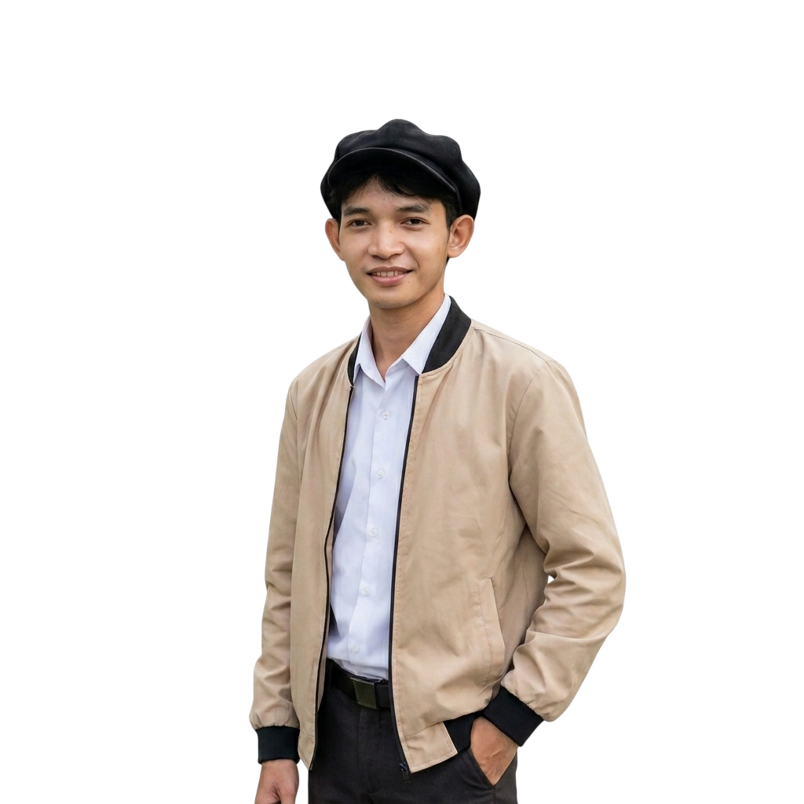

Hello! I am Jan Welner Decinilla, a BSIS student and aspiring Graphic Designer. I am passionate about creating attractive and effective visual content. I specialize in Canva-based designs including social media graphics, posters, presentations, and promotional materials.
graphic design works, including posters, social media graphics, and creative pictures and posted in Facebook.
Personal portfolio website showcasing skills, services, and projects.
Posters, social media graphics, presentations, and Canva-based designs.
📧 Email: welnerdecinilla641@gmail.com
📱 Mobile No.: 09931944155
💼 LinkedIn: www.linkedin.com/in/jan-welner-decinilla-b1342b40b
📍 Davao del Norte, Philippines